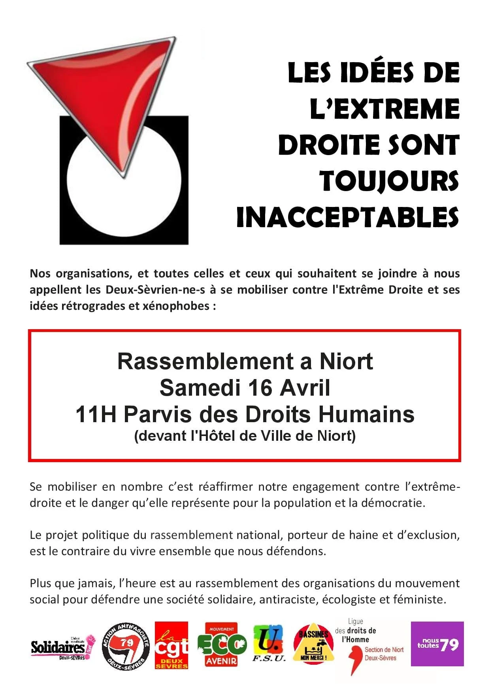

Appel archivé
« Les idées de l’extrême droite sont toujours inacceptables »
Date indiquée par Facebook · 14 avril 2022
Repères éditoriaux
Nous avons relayé l’appel au rassemblement du samedi 16 avril 2022 à 11 h sur le parvis des Droits humains, devant l’hôtel de ville de Niort. Entre les deux tours de la présidentielle, les organisations signataires appelaient à défendre une société solidaire, antiraciste, écologiste et féministe.

Sources
Archive rouge · document diffusé sur Facebook · AR-0002-FB-01899
À lire aussi · « L’Europe des gens, pas l’Europe de l’argent ! » Le tract de la liste d’Ian Brossat